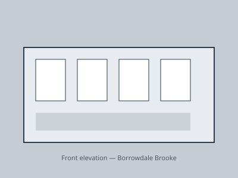
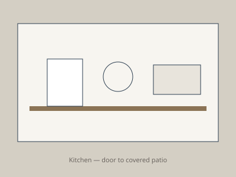

For sale · Title deed
14 Borrowdale Brooke, Harare
US$385,000
- Bedrooms
- 4
- Bathrooms
- 3
- Reception
- 2
- Approx. area
- 320 m²
- Stand
- 2,400 m²
- ZESA
- Prepaid · solar backup
Description
A four-bedroom house on a quiet cul-de-sac in Borrowdale Brooke. The current owners have lived here twelve years, replaced the roof in 2019, rewired in 2021, and added a garden cottage with council approval (ref: HRE/2022/0456).
Ground floor: lounge with fireplace, dining room, and kitchen opening to a covered patio and pool. First floor: three bedrooms and family bathroom. Cottage: guest suite with separate entrance — currently let to a tenant on month-to-month terms (vacant possession negotiable).
Borehole and 5 kVA solar inverter. Walled property with electric gate. Viewings by appointment — the house is occupied.
Images



Room notes
| Room | Dimensions (approx.) | Note |
|---|---|---|
| Lounge | 6.2 × 4.5 m | North-facing; fireplace |
| Kitchen | 4.8 × 3.2 m | Patio access; pantry |
| Main bedroom | 5.0 × 4.2 m | En-suite; built-in cupboards |
| Garden cottage | 4.5 × 4.0 m | Separate entrance; currently tenanted |
Location
Borrowdale Brooke is five minutes from Sam Levy's Village and ten minutes from Arundel School. Commute to the CBD is 25–40 minutes depending on traffic. Water: municipal plus borehole backup.
These particulars are a guide only. Mufaro Properties has not tested services or appliances. Buyers should verify title, servitudes, and compliance with their conveyancer.